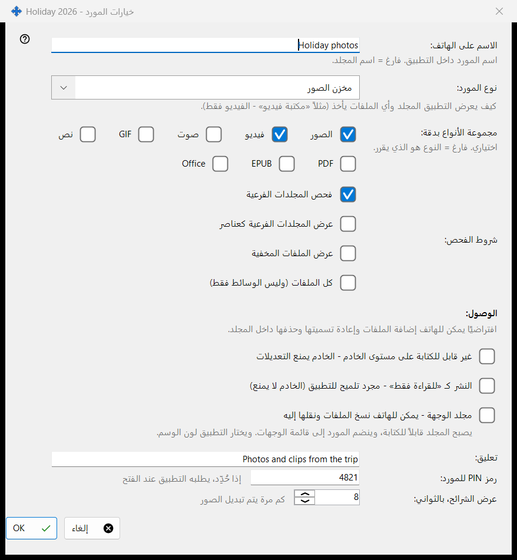
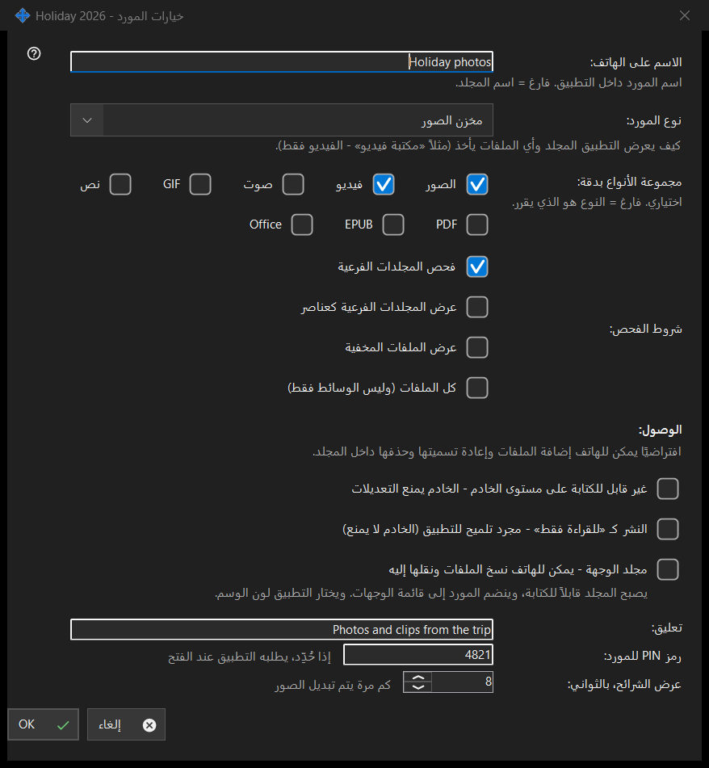

خيارات المورد
الغرض من هذه النافذة
خيارات مجلد مشترك واحد: اسمه على الهاتف، ونوعه، والملفات المعروضة، ومن يحق له تغييرها، وبعض الإضافات. يُفتح من تعديل في النافذة الرئيسية، ومن صف المجلد، ومن معالج الموارد. ينتهي العنوان الفعلي لهذه النافذة باسم المجلد.


بهذا الترتيب
- اضبط الاسم الذي سيعرضه الهاتف.
- اختر نوع المورد أو مجموعة وسائط محددة.
- اضبط شروط الفحص.
- اختر صلاحية الوصول.
- افتح خيارات متقدمة لإدخال تعليق وPIN وفاصل عرض الشرائح.
- اضغط موافق.
عناصر النافذة
الاسم والنوع
الاسم على الهاتف: هو اسم المجلد في التطبيق؛ والفارغ يعني اسم المجلد نفسه. نوع المورد: يعرض مجلد عادي ومكتبة صوتية ومكتبة فيديو ومخزن الصور والمستندات. مجموعة الأنواع بدقة: تحدد الأنواع بالضبط (الصور، فيديو، صوت، نص، كل الملفات)؛ والفارغ يعني أن النوع هو الذي يقرر.
شروط الفحص
فحص المجلدات الفرعية، وعرض المجلدات الفرعية كعناصر، وعرض الملفات المخفية، وعرض كل الملفات لا الوسائط فقط.
الوصول
افتراضياً يستطيع الهاتف إضافة الملفات في المجلد وإعادة تسميتها وحذفها. للقراءة فقط قفل حقيقي: يرفض الخادم التغييرات. أما تلميح القراءة فقط فيطلب من التطبيق فقط إخفاء أزرار التعديل؛ ولا يمنع الخادم شيئاً. المجلد الوجهة يستطيع استقبال النسخ والنقل من الهاتف؛ ويصبح قابلاً للكتابة وينضم إلى قائمة المستلمين، ويختار التطبيق لونه.
خيارات متقدمة
تعليق (اختياري)، وPIN للمورد (يطلبه التطبيق عند فتح المورد)، وفاصل عرض الشرائح بالثواني. تُرسل الإعدادات إلى الخادم عند التأكيد.